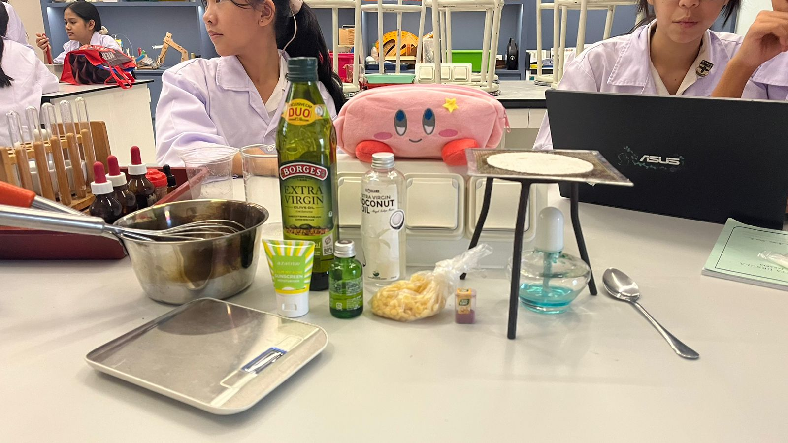
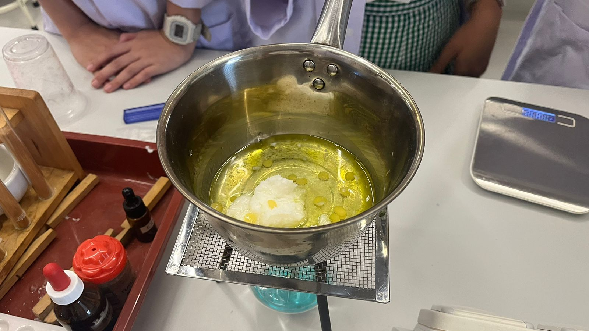
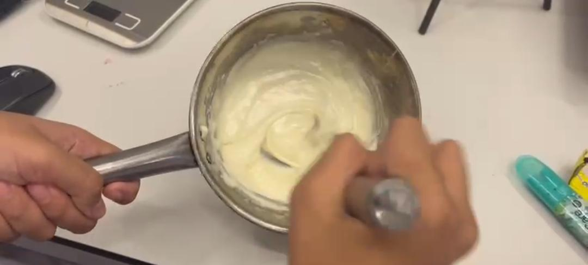

🌟 Ingredients for Coco Cream: 🌟
1. Coconut Oil – 10 gr
2. Shea Butter – 25 gr
3. Beeswax – 5 gr
4. Essential Oils – as needed
5. Logo Sticker – 1
6. Packaging Bottle – 1
🌟 Tools for Coco Cream: 🌟
1. Pot
2. Whisk
3. Piping Bag
4. Scissors
5. Bowl
6. Spatula
7. Stove
🌟 The steps to make Coco Cream: 🌟
1. The tools and materials must first be prepared.
2. All the already weighed materials (excluding the essential oils) should then be poured into the bowl and mixed evenly with the spatula.
3. Pour water into the pot and place it on the heated stove.
4. The bowl should then be carefully placed over the pot of hot water and left till all the materials have melted.
5. The bowl must then be carefully taken out and left to rest until it reaches room temperature.
6. Whisk the materials until it has the proper texture and consistency of a cream.
7. Move the cream into the piping bag, then use it to pour the cream into the packaging bottles.
8. Close and secure the bottles before placing the sticker logo on the side of the bottle.
9. Lastly the tools must then be washed and tidied up.



🌟 Ingredients for Golden Melt : 🌟
1. Chicken – 400 gr
2. Eggs – 5 butir
3. Wheat Flour – 600 gr
4. Salt – 60 gr
5. Pepper – ½ tsp
6. Bread Flour – 100 gr
7. Susu UHT – 160 gr
8. Yeast – 10 gr
9. Margarin – 60 gr
10. Butter – 60 gr
11. Mayonnaise – as needed
12. Cheese Slices – 2 lembar
13. Oil – as needed
14. Granulated Sugar – 50 gr
15. Powder Milk – 50 gr
16. Condense Milk – 100 gr
17. Fresh Milk - 160gr
18. Tomato sauce - As needed
🌟Tools for Golden Melt : 🌟
1. Cutting Board
2. Meat Mash
3. Wrap Plastic
4. Bowl
5. Measuring Spoon
6. Kitchen Knife
7. Plate
8. Vintage Wrapper
9. Filter
10. Whisk
11. Pan
12. Stove
13. Mixer
14. Bread Pan
15. Oven
🌟The steps to make Golden Melt : 🌟
1. Prepare the tools and ingredients.
2. Measure all the ingredients.
3. Put the dry ingredients (Cakra flour, yeast, granulated sugar, and powdered milk) in a bowl. In another bowl, add the wet ingredients (milk, butter, salt, three egg yolks, and sweetened condensed milk).
4. Transfer both bowls to a stand mixer.
5. Let the machine knead the dough until everything is mixed.
6. Add the butter to the mixer and let it mix.
7. Knead the dough and let it proof , Grease the pan with butter and parchment paper and have the dough be transferred to a bread pan before baking it in the oven.
8. Remove the bread and let it rest for 10-15 minutes.
9. Slice the bread for sandwiches.
10. Flatten the chicken with a meat mallet or rolling pin to a thickness of 1 cm.
11. Prepare three bowls: flour, beaten egg, and panko breadcrumbs.
12. Coat the chicken in flour, dip it in egg, and then coat it in panko breadcrumbs.
13. The chicken must then be fried in hot oil over medium heat for 4-5 minutes per side until it is golden brown and cooked through.
14. Drain the chicken and cut it into sandwich-size pieces.
15. Prepare mayonnaise, sliced cheese, and lettuce.
16. The sandwich should then be assembled with bread, chicken katsu, cheese, lettuce, and mayonnaise.
17. The Golden Melt now can be served.
18. The tools and ingredients that were used must lastly be cleaned and tidied up.